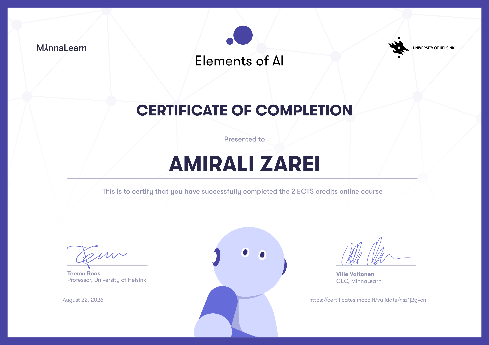

Elements of AI — Certificate & Analytical Deep Dive
A 2 ECTS credit course on the fundamentals and implications of artificial intelligence, with my own analysis and reflections on every chapter.
Certificate

Chapter-by-Chapter Analysis
Six chapters, six sets of questions I sat with. Click any chapter to expand my reflections.
01What is AI?+
Core Concepts: Autonomy, Adaptivity, the Turing Test / Chinese Room
"To me, AI is best defined as a system capable of making rational, human-like decisions in varying scenarios — acting precisely as a wise human would when facing similar context and constraints."
"Consciousness is an unsolved concept even in human biology, making it challenging to define for machines. Machine intelligence shouldn't be viewed as absolute consciousness, but rather as an emergent intelligence derived from active behavioral simulation. We cannot dismiss its intelligence when it produces intelligent outcomes. After all, human knowledge isn't entirely innate either — we learn, adapt, and build intelligence continuously from our environment."
02Problem Solving & Games+
Core Concepts: State Spaces, Search Algorithms, the Minimax Algorithm
"Modeling real-world problems into state spaces is highly effective, but complex human decisions require having lived the human experience. When humans feed data to AI, there is a high chance of missing critical nuances or deeply subconscious factors that humans cannot easily articulate."
"Minimax is designed for zero-sum environments where every player acts with pure rationality. However, real human decision-making is often emotional, unpredictable, and flawed. Applying Minimax to real-world human interactions falls short; we require far larger statistical and probabilistic models to account for human emotion and irrationality."
03Uncertainty & Probability+
Core Concepts: Probabilistic AI, Uncertainty Management, Bayes' Rule
"Transitioning from binary right/wrong outputs to probabilistic margins makes AI substantially more accurate. Accounting for a 20% margin of uncertainty ensures humans aren't surprised by unforeseen outcomes and forces us to consider every single variable."
"I am highly adaptable, provided I reach a genuine conviction that a new approach is superior. If I am already satisfied with my current method, I do not take blind risks — I require clear evidence of higher efficiency before switching. However, if I am unsatisfied with a process, I readily embrace risks and update my approach."
04Machine Learning+
Core Concepts: Supervised vs. Unsupervised Learning, Clustering, Overfitting
"Unsupervised learning bridges the gap created by expensive labeled data. By allowing AI to first discover structural patterns and clusters within vast amounts of cheap, unlabeled data, we drastically reduce our reliance on human-labeled datasets."
"To prevent overfitting (memorization), the fundamental goal must shift from answering static questions to deep comprehension. Both humans and AI must be evaluated on entirely unseen edge cases and diverse variations to prove genuine understanding rather than simple memorization."
05Neural Networks & Deep Learning+
Core Concepts: ANN Architectures, Deep Learning, the Black Box Dilemma
"In critical fields like medicine or legal decision-making, high accuracy alone is insufficient. We should not blindly trust a black-box model when even the most sophisticated systems can make inexplicable errors. Transparency is non-negotiable."
"While both adjust connection weights through learning, the human brain generalizes remarkably fast from minimal data (e.g., seeing just a few examples) with minimal energy consumption, whereas artificial networks require massive datasets and computing power."
06Ethics & Future Impact+
Core Concepts: Algorithmic Bias, Accountability, Societal Transformation
"Attributing fault for AI errors is multifaceted: if an AI product explicitly guarantees safety and fails, the liability falls on the software developer and owning company. If an error occurs in an undefined, complex edge case where safety was never explicitly guaranteed, no single party is solely to blame — it represents a collective system risk across developers, companies, and users who acknowledged the implicit risks."
"AI is 100% an empowering tool rather than a replacement for human work. Without humans, AI systems are incomplete — they cannot truly step into human shoes, understand deep contextual nuance, or establish genuine human connection."